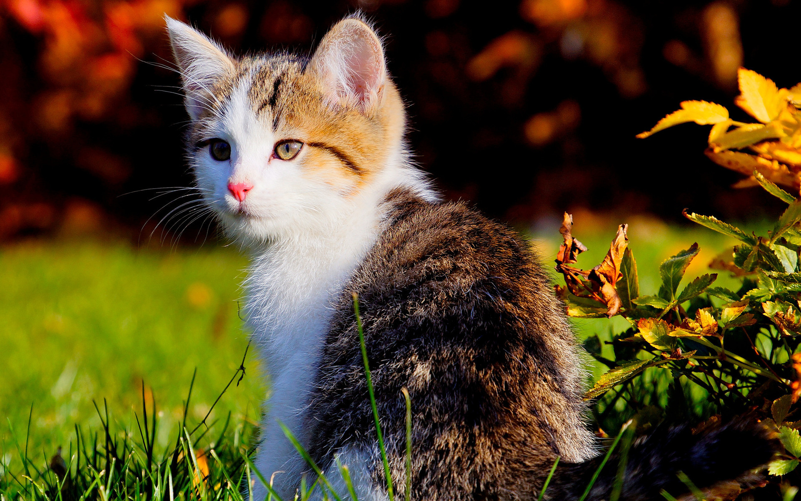

Meet Oliver
Jerry, a mixed-breed rescue dog, found his forever home in the loving arms of the Smith family five years ago. Since then, he has become an integral part of their lives, bringing joy, laughter, and an abundance of happy memories. From the moment he arrived, Jerry embraced his role as the family's faithful companion, always ready to offer comfort, support, and a wag of encouragement.
Meet Max
Jerry, a mixed-breed rescue dog, found his forever home in the loving arms of the Smith family five years ago. Since then, he has become an integral part of their lives, bringing joy, laughter, and an abundance of happy memories. From the moment he arrived, Jerry embraced his role as the family's faithful companion, always ready to offer comfort, support, and a wag of encouragement.

Meet Simba
Meet Tom, a charming and enigmatic cat whose presence adds an air of intrigue to any room he enters. With his sleek black fur, piercing green eyes, and graceful movements, Tom embodies the essence of a true feline, captivating all who cross his path.
Known for his independent nature, Tom marches to the beat of his own drum. He possesses a quiet confidence that is both alluring and mysterious.
Meet Luna
Jerry, a mixed-breed rescue dog, found his forever home in the loving arms of the Smith family five years ago. Since then, he has become an integral part of their lives, bringing joy, laughter, and an abundance of happy memories. From the moment he arrived, Jerry embraced his role as the family's faithful companion, always ready to offer comfort, support, and a wag of encouragement.
Meet Chloe
Jerry, a mixed-breed rescue dog, found his forever home in the loving arms of the Smith family five years ago. Since then, he has become an integral part of their lives, bringing joy, laughter, and an abundance of happy memories. From the moment he arrived, Jerry embraced his role as the family's faithful companion, always ready to offer comfort, support, and a wag of encouragement.
Meet Tom
Meet Tom, a charming and enigmatic cat whose presence adds an air of intrigue to any room he enters. With his sleek black fur, piercing green eyes, and graceful movements, Tom embodies the essence of a true feline, captivating all who cross his path.
Known for his independent nature, Tom marches to the beat of his own drum. He possesses a quiet confidence that is both alluring and mysterious.

Meet Bella
Jerry, a mixed-breed rescue dog, found his forever home in the loving arms of the Smith family five years ago. Since then, he has become an integral part of their lives, bringing joy, laughter, and an abundance of happy memories. From the moment he arrived, Jerry embraced his role as the family's faithful companion, always ready to offer comfort, support, and a wag of encouragement.
Meet Jasper
Meet Tom, a charming and enigmatic cat whose presence adds an air of intrigue to any room he enters. With his sleek black fur, piercing green eyes, and graceful movements, Tom embodies the essence of a true feline, captivating all who cross his path.
Known for his independent nature, Tom marches to the beat of his own drum. He possesses a quiet confidence that is both alluring and mysterious.
Meet Copper
Jerry, a mixed-breed rescue dog, found his forever home in the loving arms of the Smith family five years ago. Since then, he has become an integral part of their lives, bringing joy, laughter, and an abundance of happy memories. From the moment he arrived, Jerry embraced his role as the family's faithful companion, always ready to offer comfort, support, and a wag of encouragement.